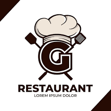

INDEX
MENUS
CONTACT
MENU CARD
FLEXBOX
MAHARASHTRA VEGETRIAN RESTAURANT
INFORMATION OF OUR RESTAURANT
A restaurant is a business that prepares and serves food and drinks to customers.[1] Meals are generally served and eaten on the premises, but many restaurants also offer take-out and food delivery services. Restaurants vary greatly in appearance and offerings, including a wide variety of cuisines and service models ranging from inexpensive fast-food restaurants and cafeterias to mid-priced family restaurants, to high-priced luxury establishments.
IF YOU ARE TRYING BEST FOOD SO YOU CONNECT OUR RESTAURANT